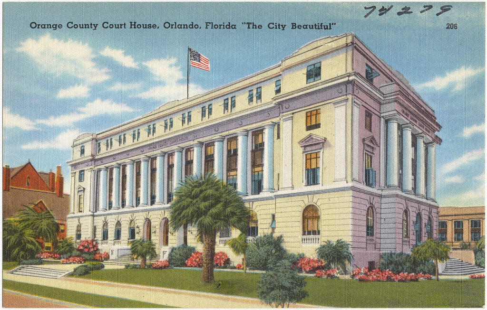

Meet the doctorConozca a la doctora
Dr. A. Viviana SantosDra. A. Viviana Santos
A dentist from Bogotá who has cared for Orlando families since 1999, in English and Spanish.Una odontóloga de Bogotá que cuida a las familias de Orlando desde 1999, en español y en inglés.
Portrait of Dr. SantosRetrato de la Dra. Santos
Photo to be supplied by the officeFoto a entregar por el consultorioHer storySu historia
A native of Bogotá, Colombia, Dr. A. Viviana Santos received her dental degree in 1996 from El Bosque University. After graduation she completed a specialty in public health at Universidad del Rosario. In 1999 she moved to Florida, went on to the University of Florida and graduated from the IEDP program. After passing her boards, she began serving her community’s dental needs.Nacida en Bogotá, Colombia, la Dra. A. Viviana Santos recibió su título de odontóloga en 1996 en la Universidad El Bosque. Después de graduarse completó una especialización en salud pública en la Universidad del Rosario. En 1999 se mudó a Florida, continuó en la Universidad de Florida y se graduó del programa IEDP. Tras aprobar sus exámenes de licencia, empezó a atender las necesidades dentales de su comunidad.
In her Orlando practice Dr. Santos performs a wide range of treatments, from fillings to complex implant, restorative and cosmetic cases. Having devoted countless hours to treating children and adults, she is an expert at putting patients of all ages at ease. Nothing brings her more satisfaction than a treatment plan tailored to each patient’s oral and overall health.En su consultorio de Orlando, la Dra. Santos realiza una amplia gama de tratamientos, desde empastes hasta casos complejos de implantes, restauración y estética. Tras incontables horas atendiendo a niños y adultos, es experta en tranquilizar a pacientes de todas las edades. Nada le da más satisfacción que un plan de tratamiento hecho a la medida de la salud oral y general de cada paciente.
Dr. Santos lives in Orlando with her husband and daughters.La Dra. Santos vive en Orlando con su esposo y sus hijas.
Training and practiceFormación y trayectoria
- 1996Dental degree, El Bosque University, BogotáTítulo de odontóloga, Universidad El Bosque, Bogotá
- 1997Specialty in public health, Universidad del RosarioEspecialización en salud pública, Universidad del Rosario
- 1999Moves to FloridaSe muda a Florida
- 2000sAños 2000IEDP program, University of Florida; passes her boardsPrograma IEDP, Universidad de Florida; aprueba sus exámenes de licencia
- TodayHoyOrlando Dental Care, 5211 Curry Ford RoadOrlando Dental Care, 5211 Curry Ford Road
MembershipsMembresías
- American Dental Association
- Florida Dental Association
- Central District Dental Association
From Bogotá to OrlandoDe Bogotá a Orlando

Ready for a first visit?¿Agendamos su primera visita?
Call, or send a message and the front desk will get back to you the same business day.Llame o envíe un mensaje y la recepción le responde el mismo día hábil.